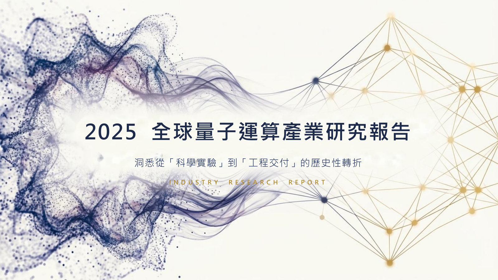

金融研究與產品作品集
Mike 張大恒
國立中山大學金融創新產碩專班
台新綜合證券 金融交易總處實習
我研究交易策略、開發金融分析工具，也創辦了兩個校園社團。作品包含課堂獨立程式、實習專案與產業研究。
台新實習
台新綜合證券
金融交易總處
2026 年暑期實習，參與信評預測、風險回測、市場資料與商品評價。TCRI 模型持續優化中；可轉債的擇券與進退場研究另列於交易策略案例，分開呈現預測效力與交易結果。
投資交易
交易策略與回測研究
課堂獨立開發的台股、比特幣與因子選股策略，以及實習中的可轉債研究。從交易邏輯、進出場與部位規則，到成本、回撤與基準比較。
個人代表作
研究驗證與金融分析工具
把策略檢定、選股條件與選擇權風險分析做成可操作的工具，讓研究結果有清楚的輸入、計算與呈現方式。
完整索引
全部作品，分成四類。
上方詳述的案例可直接跳回，其餘點開即可看完整說明。牽涉公司或個人資料的專案不提供對外連結。
經歷摘要
銀行實習、產業研究與社團創辦。
在高雄銀行完成 12 家國際公司補充徵信報告；研究助理工作涵蓋投資哲學與量子電腦產業。創辦兩個校園社團，投研社首屆招募 122 人，取得逾 NT$80,000 企業贊助。
台新綜合證券 金融交易總處
暑期實習生參與信評預測、CB 交易策略研究、ANC 回測、市場資料流程與 BLN 商品評價；TCRI 預測模型持續優化中。高雄銀行 OBU
國際聯貸實習生完成 12 家國際公司補充徵信報告，協助償債能力評估、財報核對與核貸後流程。國立中山大學管理學院／人力資源管理研究所
研究助理進行投資哲學比較與量子電腦產業研究，整理技術路線、企業競爭與金融應用個案。量子電腦產業研究｜查看研究內容

研究助理相關主題與後續整理，含 2025 年產業資料；非即時市場資訊。 技術路線與產業競爭
比較超導、離子阱與光子等技術路線，整理硬體瓶頸、代表企業、商業模式及供應鏈；從技術進展延伸到營收、資本需求與商業化條件。
Willow 發布與市場反應
以 Google Willow 發布為事件背景，整理科技巨頭與量子企業的股價反應、公司動態與市場敘事。事件同期漲跌與因果歸因分開討論。
量子運算的金融應用個案
以富國銀行相關研究為切入點，整理量子運算在交易定價、投資組合優化與時序預測的研究方向，比較研究原型與金融實務需求。
成果包含：產業概況、Willow 事件研究、金融應用個案報告與產業簡報。
中山大學管理顧問及產業研究社
創辦人／社長／講師社員超過 50 人，較初期成長 7 倍。
技能、證照與競賽
技能與證照
- Python / C
- Bloomberg / TEJ
- TOEIC 785
- 證券商高級業務員
競賽
- 凱基證券校園股神：全國第 13 名
- 統一證券模擬投資競賽：團體組全國第 10 名
- 富邦校園資產管理人才培育營：四校總決賽冠軍
- TBSA 全國大專創新企劃競賽：佳作
聯絡
上面有哪一個讓你想多問兩句，歡迎來信。
面試、合作，或單純想聊聊做法都可以。